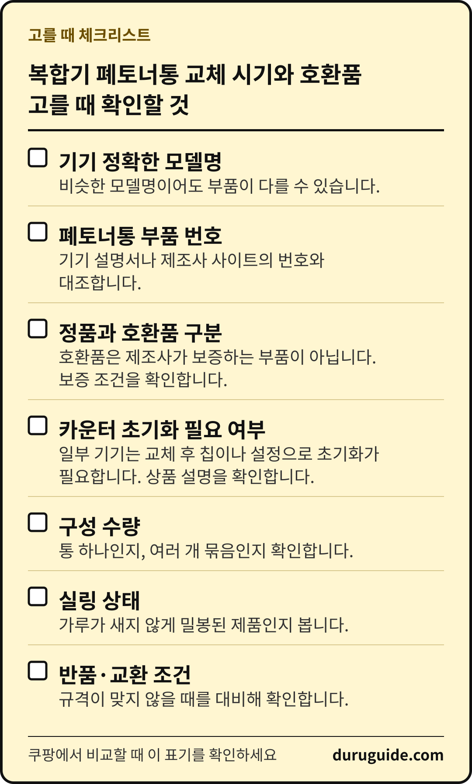

복합기 폐토너통 교체 시기와 호환품 고를 때 확인할 것
이런 상황이죠
복합기나 레이저 프린터에 "폐토너통을 교체하세요" 또는 "폐토너통이 가득 찼습니다" 같은 메시지가 뜨면서 인쇄가 멈춘 상황입니다. 토너는 새로 넣었는데도 같은 메시지가 계속 나오기도 합니다.
왜 생기나
레이저 방식 기기는 인쇄 후 감광드럼에 남은 토너를 긁어내 폐토너통에 모읍니다. 이 통이 차면 더 담을 수 없어 기기가 인쇄를 막습니다.
- 인쇄 매수가 쌓여서 통이 찼습니다.
- 컬러 기기는 색마다 남는 토너가 있어서 통이 더 빨리 차는 경우가 있습니다.
- 통이 꽉 차지 않았는데도 기기의 매수 카운터가 한계에 도달해 메시지가 뜨는 경우가 있습니다.
- 통이 제대로 장착되지 않았거나 센서에 닿지 않았습니다.
폐토너통이 필요한지는 기기 설명서와 제조사 안내에서 확인하는 것이 정확합니다. 모든 기기에 별도 교체 부품이 있는 것은 아닙니다.
사기 전에 먼저 해볼 것
비용이 들기 전에 아래를 먼저 확인합니다.
- 기기 화면에 표시된 정확한 메시지와 오류 번호를 적어 둡니다.
- 전원을 끄고 코드를 뽑은 뒤 폐토너통을 꺼냈다가 다시 끼웁니다. 장착 불량이면 해결되는 경우가 있습니다.
- 통의 투명 창이나 눈금이 있는 모델은 실제로 찼는지 눈으로 봅니다.
- 기기 설명서에서 교체 주기와 폐토너통의 부품명을 찾습니다.
- 제조사 홈페이지에서 모델명으로 소모품 목록을 검색합니다.
- 서비스센터에 해당 부품이 별도 교체 대상인지 문의합니다.
토너 가루가 쏟아지면 피부와 호흡기에 닿지 않도록 합니다. 쏟아진 가루는 일반 청소기로 빨아들이지 말고, 젖은 천으로 닦아냅니다. 작업 전에는 반드시 전원을 차단하고, 기기 내부가 뜨거울 수 있으니 식을 때까지 기다립니다. 꺼낸 통은 가루가 새지 않게 봉투에 담아 둡니다.
고를 때 체크리스트
호환품은 모델이 맞아야 합니다. 판매 페이지의 표기를 아래 항목과 대조합니다.
| 확인할 것 | 이유 |
|---|---|
| 기기 정확한 모델명 | 비슷한 모델명이어도 부품이 다를 수 있습니다. |
| 폐토너통 부품 번호 | 기기 설명서나 제조사 사이트의 번호와 대조합니다. |
| 정품과 호환품 구분 | 호환품은 제조사가 보증하는 부품이 아닙니다. 보증 조건을 확인합니다. |
| 카운터 초기화 필요 여부 | 일부 기기는 교체 후 칩이나 설정으로 초기화가 필요합니다. 상품 설명을 확인합니다. |
| 구성 수량 | 통 하나인지, 여러 개 묶음인지 확인합니다. |
| 실링 상태 | 가루가 새지 않게 밀봉된 제품인지 봅니다. |
| 반품·교환 조건 | 규격이 맞지 않을 때를 대비해 확인합니다. |
호환품을 쓰면 기기에 따라 오류가 날 수 있고, 제조사 무상 보증에 영향을 줄 수도 있습니다. 보증 기간 중이라면 먼저 제조사에 확인해 보세요.
추천 제품 찾기
위 체크리스트에서 기기 모델명과 부품 번호를 정리한 뒤, 쿠팡에서 같은 번호의 폐토너통을 비교해 보세요. 정품인지 호환품인지, 교체 후 초기화가 필요한지를 상세 설명에서 확인하는 것이 좋습니다. 현재 가격은 쿠팡에서 확인해 주세요.

위 표의 표기를 비교해 보세요.
현재 가격은 쿠팡에서 확인해 주세요.
이 포스팅은 쿠팡 파트너스 활동의 일환으로, 이에 따른 일정액의 수수료를 제공받습니다.